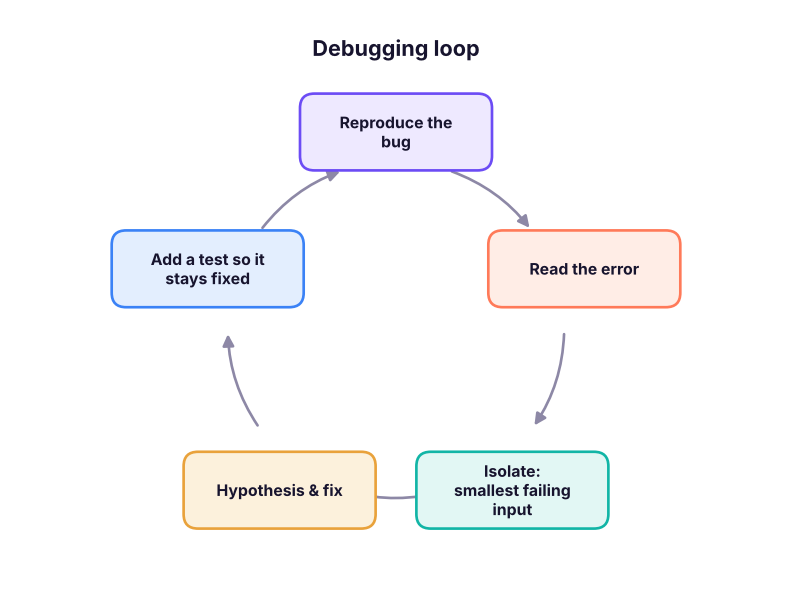

Debugging, Testing, Regular Expressions and Code Quality
Find and fix bugs systematically, write automated tests with pytest, clean text with regular expressions, and keep code readable with PEP 8, type hints, linters and formatters.
- Read a traceback and debug with print, breakpoints and pdb
- Write and run unit tests with assert and pytest, including parametrised tests
- Use regular expressions to search, extract, validate and replace text
- Apply PEP 8 naming and layout, type hints, and automatic tools (ruff, black, mypy)
- Use AI assistants to debug and review code responsibly
Reading a traceback
Read a traceback from the bottom up: the last line names the error, the lines above show where it happened.
def average(values):
return sum(values) / len(values)
def report(data):
return f"Average: {average(data['scores']):.1f}"
print(report({"scores": []}))ZeroDivisionError: division by zero
The last line says ZeroDivisionError; the frame above points at average, called from report. The fix is a guard for empty input:
def average(values):
return sum(values) / len(values) if values else None
print(average([]), average([4, 6]))None 5.0
A debugging routine

| Technique | How |
|---|---|
| Print / f-string debugging | print(f"{i=} {total=}") shows names and values |
breakpoint() |
Pauses and opens the pdb debugger at that line |
| IDE debugger | VS Code / PyCharm: breakpoints, step over/into, watch variables |
Jupyter %debug |
Post-mortem debugging after an error in a cell |
| Rubber-duck | Explain the code line by line to someone (or an AI) |
| Bisect | Comment out halves of the code to find the failing part |
total = 0
for i, v in enumerate([5, 10, 15]):
total += v
print(f"{i=} {v=} {total=}") # the = specifier prints the name and the valuei=0 v=5 total=5 i=1 v=10 total=15 i=2 v=15 total=30
pdb commands: n (next line), s (step into), c (continue), p var (print), l (list code), q (quit).
Testing
A test is code that checks other code. Tests catch regressions when you change things later.
def clean_city(raw):
return " ".join(raw.split()).title() if raw else None
assert clean_city(" new delhi ") == "New Delhi"
assert clean_city("") is None
print("asserts passed")asserts passed
pytest
pytest finds files named test_*.py and runs functions named test_*. Plain assert statements give detailed failure messages.
from pathlib import Path
import subprocess, sys
Path("tests_demo").mkdir(exist_ok=True)
Path("tests_demo/cleaning.py").write_text('''
def clean_city(raw):
return " ".join(raw.split()).title() if raw else None
def to_inr(value):
return f"₹{value:,.0f}"
''', encoding="utf-8")
Path("tests_demo/test_cleaning.py").write_text('''
import pytest
from cleaning import clean_city, to_inr
@pytest.mark.parametrize("raw, expected", [(" pune", "Pune"), ("NEW DELHI", "New Delhi"), ("", None), (None, None)])
def test_clean_city(raw, expected):
assert clean_city(raw) == expected
def test_to_inr():
assert to_inr(1234567) == "₹1,234,567"
def test_bad_input():
with pytest.raises(ValueError): # a str cannot take the ',' number format
to_inr("abc")
def test_deliberately_failing():
assert to_inr(1000) == "₹1000" # wrong expectation, to show a failure report
''', encoding="utf-8")
r = subprocess.run([sys.executable, "-m", "pytest", "-q", "--no-header", "-p", "no:cacheprovider", "tests_demo"], capture_output=True, text=True)
lines = r.stdout.strip().splitlines()
print("\n".join([l for l in lines if "assert" in l or "passed" in l or "failed" in l][-4:]))
import shutil; shutil.rmtree("tests_demo")> assert to_inr(1000) == "₹1000" # wrong expectation, to show a failure report E AssertionError: assert '₹1,000' == '₹1000' 1 failed, 6 passed in 0.02s
The report says which test failed and shows both values: '₹1,000' == '₹1000'. The function is right, so the test expectation is fixed.
Cleaning functions, metric calculations, edge cases (empty, missing, negative, duplicates), schema checks on loaded data (columns, types, ranges), and that a pipeline's row counts reconcile. Tools such as pandera and Great Expectations validate DataFrames.
Regular expressions
A regular expression (regex) is a pattern for text. Python's re module searches, extracts, validates and replaces.
| Pattern | Matches |
|---|---|
\d / \D |
A digit / a non-digit |
\w / \s |
Word character (letter, digit, _) / whitespace |
. |
Any character except newline |
[A-Z], [^0-9] |
Character set / negated set |
*, +, ? |
0 or more, 1 or more, 0 or 1 |
{3}, {2,4} |
Exactly 3, between 2 and 4 |
^, $ |
Start, end of string |
( ) |
Capture group; (?P<name> ) named group |
\| |
Or |
import re
text = "Call 98765-43210 or +91 91234 56789; email asha.k@gmail.com, ravi@skillnavora.in. Order #A-1029 on 2025-04-07."
print(re.findall(r"\d{5}[- ]?\d{5}", text)) # phone numbers
print(re.findall(r"[\w.+-]+@[\w-]+(?:\.[\w-]+)+", text)) # emails (no trailing full stop)
m = re.search(r"(?P<y>\d{4})-(?P<m>\d{2})-(?P<d>\d{2})", text)
print(m.group(), m["y"], m.groupdict())
print(re.sub(r"\d", "X", "PAN ABCDE1234F"), re.split(r"[;,]\s*", "a, b;c ,d"))
print(bool(re.fullmatch(r"[A-Z]{5}\d{4}[A-Z]", "ABCDE1234F")), bool(re.fullmatch(r"[A-Z]{5}\d{4}[A-Z]", "ABCD1234F"))) # PAN format['98765-43210', '91234 56789']
['asha.k@gmail.com', 'ravi@skillnavora.in']
2025-04-07 2025 {'y': '2025', 'm': '04', 'd': '07'}
PAN ABCDEXXXXF ['a', 'b', 'c ', 'd']
True FalseAlways use raw strings r"..." for patterns, so \d is not treated as an escape. Test patterns at regex101.com.
Regex on a DataFrame
import pandas as pd
c = pd.DataFrame({"name": ["Asha", "Ravi", "Meera", "Kabir", "Zoya"],
"email": ["asha@gmail.com", "ravi@company", "MEERA@Yahoo.co.in", "kabir @gmail.com", None],
"phone": ["98765 43210", "+91-91234-56789", "12345", "9123456789", "0987654321"]})
c["email_ok"] = c["email"].str.fullmatch(r"[\w.+-]+@[\w-]+(?:\.[\w-]+)+", na=False)
c["domain"] = c["email"].str.lower().str.extract(r"@([\w.-]+)$")[0]
digits = c["phone"].str.replace(r"\D", "", regex=True).str[-10:]
c["phone_ok"] = digits.str.fullmatch(r"[6-9]\d{9}")
print(c[["name", "email_ok", "domain", "phone_ok"]])name email_ok domain phone_ok 0 Asha True gmail.com True 1 Ravi False company True 2 Meera True yahoo.co.in False 3 Kabir False gmail.com True 4 Zoya False NaN False
pandas string methods (.str.contains, .str.extract, .str.replace, .str.fullmatch) accept regex and run on the whole column.
Code quality
PEP 8 is Python's style guide. The essentials:
| Rule | Example |
|---|---|
snake_case for variables and functions |
total_sales, clean_city() |
PascalCase for classes |
CleaningPipeline |
UPPER_CASE for constants |
GST_RATE = 0.18 |
| 4-space indentation, lines ≤ 79–100 chars | |
| Spaces around operators, after commas | x = a + b, f(a, b) |
| Imports at the top, grouped std / third-party / local | |
| Meaningful names over comments | days_since_last_order, not d |
Let tools do the work:
pip install ruff mypy
ruff check . # lint: unused imports, undefined names, bad patterns
ruff format . # auto-format (black-compatible)
mypy src/ # check type hints
pre-commit install # run them automatically before each commitPaste the full traceback and the smallest code that reproduces it into an AI assistant (Claude, ChatGPT, Copilot, Gemini). Ask it to explain the cause before proposing a fix, then run the fix and add a test. Never paste secrets or confidential data, and check that suggested library functions really exist.
Summary
- Read tracebacks bottom-up; reproduce, isolate, hypothesise, fix, then add a test.
- Debug with
print(f"{x=}"),breakpoint(), an IDE debugger or%debug. pytestrunstest_*functions with plainassert; useparametrizefor many cases andpytest.raisesfor errors.- Regex:
re.search,findall,fullmatch,sub,split; raw strings; pandas.strmethods accept regex. - Follow PEP 8 and automate it with ruff, a formatter and mypy.
1. Where do you start reading a Python traceback?
2. What does print(f"{total=}") print when total is 5?
= specifier is a debugging shortcut.3. Which file name will pytest discover by default?
test_*.py or *_test.py, functions test_*.4. What does \d{3} match?
\d is a digit; {3} repeats it exactly three times.5. Why use r"..." for regex patterns?
6. Which naming follows PEP 8 for a function?
(1) Write a regex that extracts all hashtags from a tweet. (2) Validate Indian PIN codes (6 digits, not starting with 0). (3) Write three pytest tests for a percent_change function, including the zero case. (4) Run ruff check on one of your notebooks exported as .py and fix the warnings.
Show solution
import re
print(re.findall(r"#\w+", "Loving #Python and #DataScience!"))
pin = re.compile(r"[1-9]\d{5}")
print(bool(pin.fullmatch("411001")), bool(pin.fullmatch("011001")))
# test_metrics.py
# def test_up(): assert percent_change(100, 120) == 20
# def test_down(): assert percent_change(100, 80) == -20
# def test_zero(): assert percent_change(0, 5) is NoneQ: How do you debug a function that gives wrong output only for some inputs? Reproduce with the smallest failing input, inspect intermediate values (prints or debugger), form a hypothesis, fix, and add the case as a regression test.
Q: Unit test vs integration test? A unit test checks one small function in isolation; an integration test checks that components work together (e.g. load → transform → write).
Q: Write a regex for a 10-digit Indian mobile number.
^[6-9]\d{9}$ (optionally allowing a +91 prefix: ^(?:\+91[- ]?)?[6-9]\d{9}$).
Practise more online
Free, trusted places to test yourself on this topic. Links open the original site in a new tab.